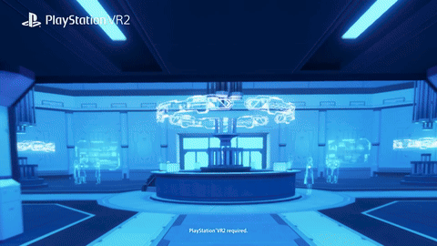
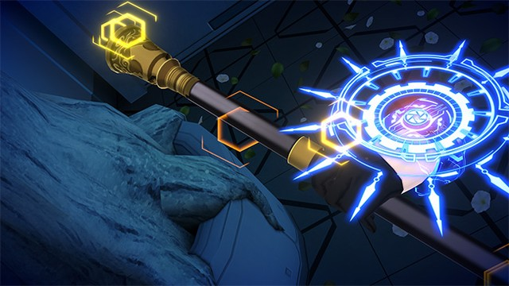
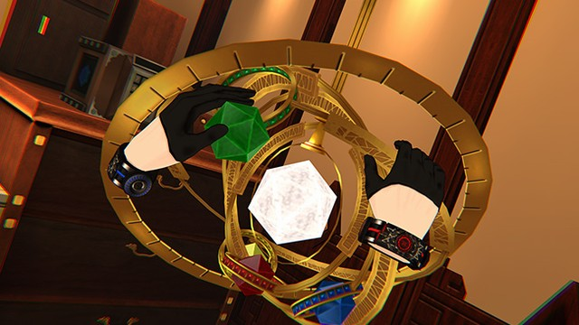

Selected work / 03
DYSCHRONIA: Chronos Alternate
VR story scenes in Unity for a Meta Quest 2 adventure: 3D cutscenes, props, NPC interactions, stealth and puzzle balance.
- Role
- Game Designer
- Team
- Development team: approximately 26 people
- Period
- 2022-04 — 2023-03
- Engine
- Unity / VR
- Tools
- In-house script engine, Google Sheets, Confluence, Excel, Word, PowerPoint



Official promotional material illustrates the game; it does not identify individual scene authorship.
Challenge
In VR the player can look anywhere, so scene building and cutscene direction have to carry the story on their own. Stealth sections, puzzles, props and narrative scenes all had to hold together within a 26-person development team.
What I did
- Developed 3D ADV cutscenes for VR.
- Managed props across the Unity scenes.
- Proposed NPC interactions and achievements.
- Controlled the quality of the cutscene direction.
- Balanced the stealth sections and the puzzles.
- Revised English scripts and debugged builds.
- Proposed improvements to the development tools.
Result
Credited as Game Designer on the official staff page of the title.